全部(春夏冬)
隧道开通后，村的扩建100%以后，可以在隧道开通矿山
矿山内黑暗，并且视野狭窄，也没有宝可梦可以使用闪光术
红色的四个地方，能够得到稀有的矿石
！标记的地方有间歇泉，会被喷到瀑布的位置
当一块矿山石被锤子砸碎时，矿石出现的概率如下。
45%：废矿石
30%：铜
3%：银、金刚石、奥利哈钢、秘银
1％：金、紫水晶、绿宝石、沙漠玫瑰石、黄玉、橄榄石、萤石、玛瑙、红宝石、迷之石板
0.5％：翡翠、月亮石、钻石、粉红钻石、贤者之石
| 名字 | 场所 | |
|---|---|---|
| 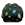 | 矿山石 | 全部 |
| 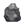 | 废矿石 | 全部 |
| 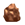 | 铜 | 1・3 |
| 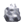 | 银 | 1・3 |
| 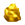 | 金 | 1・3 |
|
金刚石 | 1・3 |
| 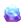 | 奥利哈钢 | 1・3 |
| 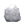 | 秘银 | 1・3 |
| 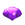 | 紫水晶 | 2・4 |
| 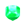 | 绿宝石 | 2・4 |
| 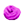 | 沙漠玫瑰石 | 2・4 |
| 黄玉 | 2・4 | |
| 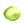 | 橄榄石 | 2・4 |
| 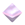 | 萤石 | 2・4 |
| 玛瑙 | 2・4 | |
| 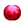 | 红宝石 | 2・4 |
| 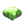 | 翡翠 | 2・4 |
| 月亮石 | 2・4 | |
| 钻石 | 2・4 | |
| 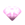 | 粉红钻石 | 2・4 |
| 贤者之石 | 2・4 | |
| 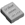 | 迷之石板 | 1・3 |
| 红色耀珠 | 2・4(秋) 全部(春夏冬) |
|
| 橙色耀珠 | ||